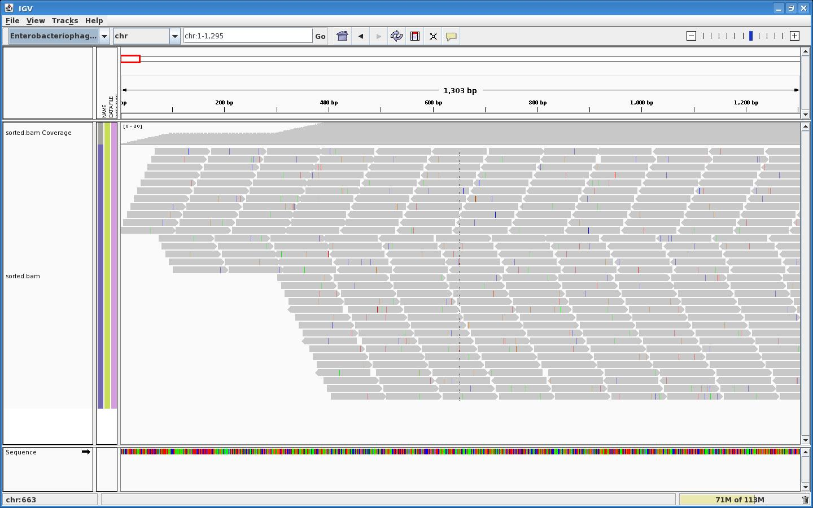

Preamble
Based on our previous PhiX Run folder generation, we now want to generate special distributions of reads for easy visual debugging with IGV.
This can of course be applied to the Human sequencing simulation. We are doing it here on a small genome to show the results more easily in IGV screenshots, and because it takes seconds instead of minutes to run the simulation.
If you haven't done it yet, you may refer to the EAGLE - Installation and configuration instructions.
Initialisation
The distribution of reads is controlled by the Fragments Allocator tool.
You can see from the tool's help (allocateFragments --help) that several options are useful to control the distribution of reads:
- --tls: Template-length statistics to specify the min, median and max lengths of DNA fragments in the sample prep
- --uniform-coverage: Generates equally-spaced reads across all tiles with a fixed template length equal to the specified median
- --tile-allocation-method: random/sequence/interleaved
Here we illustrate the use of --uniform-coverage:
source /illumina/development/EAGLE/stable-setup configureEAGLE.pl \ --run-info=$EAGLE_SHARE/RunInfo/RunInfo_PairedReads1x1Tiles.xml \ --reference-genome=/illumina/scratch/iGenomes/Enterobacteriophage_lambda/NCBI/1993-04-28/Sequence/Chromosomes/ \ --variant-list=$EAGLE_SHARE/Variants/OneOfEachType.vcf \ --coverage-depth=30 \ --fragments-allocator-options="--uniform-coverage"
Execution
cd EAGLE make
This should take about 10 seconds to complete.
Results
After "make bam" or alignment, we can visualise the BAM file in IGV:

You can see the effect of the simulated fragment length, set to 400 by default in this uniform distribution mode (adjustable with --tls), and the fact that we didn't specify the chromosome to be circular.
{kind=link}